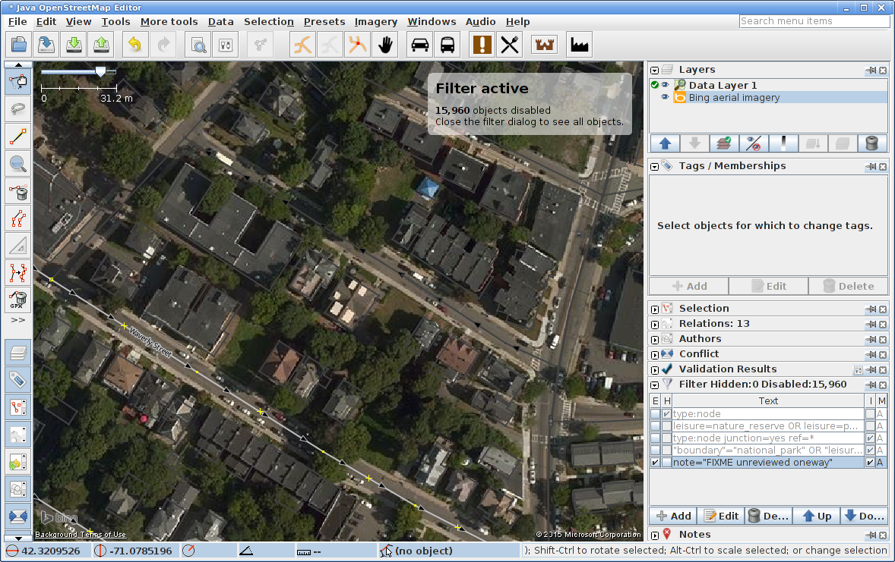
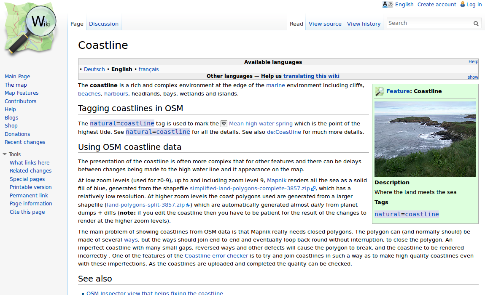
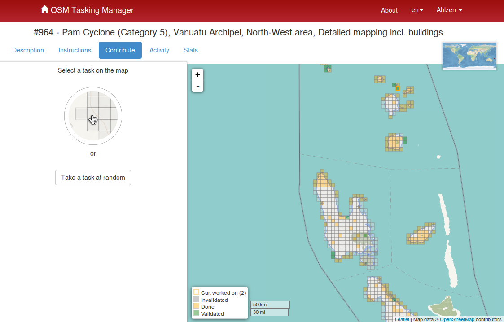
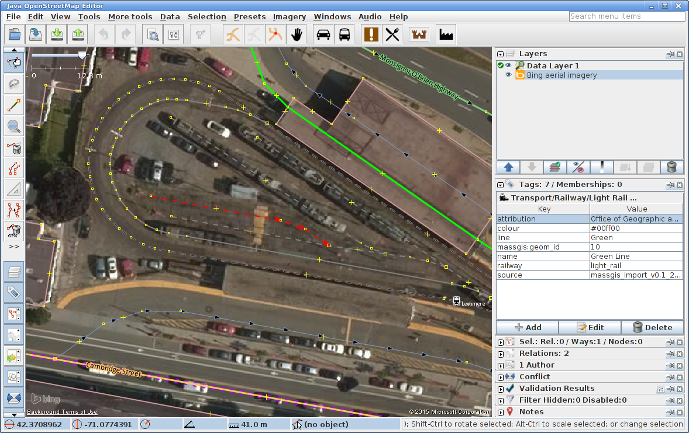

Use JOSM's filters

Armchair Mapping Special
Tasks, Tips, Techniques
MapRoulette
Quick, simple tasks that can usually be done by inspecting aerial imagery.
Warning: Highly addictive!
Example:
Highway Intersecting Building
Edit in JOSM (or iD)
Use Bing aerial imagery
Correct alignment
Save changes
"I fixed it!"
demo?
MassGIS
OpenSpace
Many imported parks and conservation lands have bad alignment.
Browse the map for suspects
Edit with JOSM or iD
Use MassGIS L3 Parcel Layer to correct alignment
Remove bad data
Fix alignment
Check tagging
Use topo maps and other resources
Clean up surroundings
Done!
demo?
Unreviewed Oneways
Direction of oneway streets from MassGIS is not known.
Use a QA tool, like OSMi, to find work.
JOSM highly recommended
Use JOSM's filters
Invert filter to highlight Unreviewed Oneways.
Use Bing or MapBox to find aactual direction.
Reverse direction if necessary (do NOT change tags)

Remove note="FIXME..."
demo?
Coastline
Coastline (and abutting features) rough in many places
Example: Plymouth Harbor
Load in JOSM (or iD)

Use aerial imagery for alignment
Careful when editing coastline!!
Coastline done. Next: Abutments
Use Parcel Layer. Cut/split polygons if necessary.

demo?
HOT:
the Humanitarian OpenStreetMap Team
Map to save lives and make the world a better place.
Some OSM experience recommended.
Follow HOT mailing lists
Active projects in Tasking Manager
Project description
Read description carefully!
Pick an area to work on
Areas are validated by experience mappers
Missing maps: Map proactively!
demo?
KeepRight
Automatically scans OSM for potential errors
Example: No tags.
Fix.
demo?
OSM Inspector
Another QA tool. From Geofabrik
Example 1: Self-intersecting ways
Example 2: Tagging problems
demo?
Map Notes
Use when armchair mapping is not enough!
Example
demo?
Lars Ahlzen
lars@ahlzen.com
OSM Boston